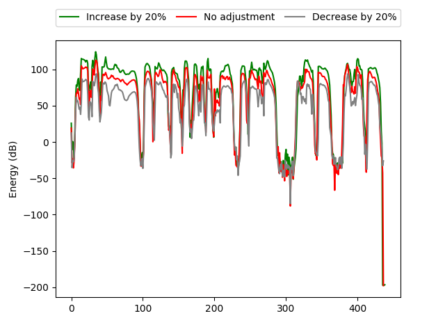

In the existing cross-speaker style transfer task, a source speaker with multi-style recordings is necessary to provide the style for a target speaker. However, it is hard for one speaker to express all expected styles. In this paper, a more general task, which is to produce expressive speech by combining any styles and timbres from a multi-speaker corpus in which each speaker has a unique style, is proposed. To realize this task, a novel method is proposed. This method is a Tacotron2-based framework but with a fine-grained text-based prosody predicting module and a speaker identity controller. Experiments demonstrate that the proposed method can successfully express a style of one speaker with the timber of another speaker bypassing the dependency on a single speaker's multi-style corpus. Moreover, the explicit prosody features used in the prosody predicting module can increase the diversity of synthetic speech by adjusting the value of prosody features.
2. Demos -- Comparison with other methods
Corresponding to section 3.2 in our paper, below lists the samples that are synthesized for evaluations on the ability to generate the desired speaking style and timbre. We compared our proposed method with the Multi-R and PB on style similarity and speaker similarity.
Style
Reference
Multi-R
PB
Proposed
Poetry
Text: 独怜幽草涧边生，上有黄鹂深树鸣。(English: On the West Stream at Chuzhou Alone, I like the riverside where green grass grows And golden orioles sing amid the leafy trees.)
Game
Text: 江苏省今年高考作文题目是。(English: The topic of Jiangsu Province’s college entrance examination composition this year is.)
Customer Service
Text: 诶那跟您核对一下是，幺幺零四，七五零五幺对吧？(English: Oh, check it with you, one hundred four, seven five zero five, right?)
Anchor
Text: 菜园也浸泡在水里，栽种着的姜蒜都掺混在一起成了一汪味道特别的泥浆浓汤。(English: The vegetable garden is also immersed in water, and the planted ginger and garlic are mixed together to form a special muddy soup.)
Stroy
Text: 就背起口袋，拄着棍子出门到那些日子过得比他富裕的省份去乞讨了。(English: He picked up his pockets and went out with a stick to begging in those provinces where the days were richer than him.)
3. Demos -- The necessity of prosody components
Corresponding to section 3.3 in our paper, below lists the samples synthesized by different variants with the same text as input.
Style
Proposed
w/o duration
w/o pitch
w/o energy
w/o all
Poetry
Text: 钓罢归来不系船,江村月落正堪眠。(English: Reverie in a Riverside Village Coming back from fishing, I don't fasten my boat; The moon sinks o'er riverside village-time to sleep.)
Game
Text: 预计在未来十年，会带来一百三十二亿平米的商品住房需求。(English: It is estimated that in the next ten years, it will bring 13.2 billion square meters of commercial housing demand.)
Customer Service
Text: 请您在今晚八点前足额存入还款账户中可以吗？(English: Would you please deposit the full amount into the repayment account before eight o'clock this evening?)
Anchor
Text: 所有的男子，都端平猎枪，拉满弩弦，握紧长刀，准备拼命。(English: All the men, with flat shotguns, full crossbow strings, clenched long knives, ready to work hard.)
Stroy
Text: 就背起口袋，拄着棍子出门到那些日子过得比他富裕的省份去乞讨了。(English: He picked up his pocket and went out with a stick to beg in the provinces where he was better off.)
4. Demos -- EXP3 Emotional speech synthesis by manual control
Corresponding to section 3.4 in our paper
Text: 清洁工阿姨一边打着自己的头，一边说“我好笨”、“我好笨”。(English: The cleaner aunt slapped her head while saying "I'm so stupid" and "I'm so stupid".)
Emotion
Decrease by 20%
No adjustment
Increase by 20%
Figures
Duration
Pitch
Energy

5. Demos -- multi-speaker multi-style TTS with single-speaker single-style training data secnarios
multi-speaker multi-style TTS with single-speaker single-style training data secnarios.
Style\Speaker
Reading
Poetry
Game
Customer Service
Anchor
Stroy
Reading
Text: 放下电话才数分钟，母亲哑着嗓子的哭吼声已经响起。(English: Only a few minutes after putting down the phone, my mother's hoarse cry and roar had already sounded.)
Poetry
Text: 颠狂柳絮随风舞，轻薄桃花逐水流。(English: Wild willow catkins dance with the wind, frivolous peach blossoms flow.)
Game
Text: 热菜里的圣子不太好吃，淡而无味，一大半都扔掉了。(English: The razor cuisine in the hot dish was not very delicious and tasteless, and more than half of it was thrown away.)
Customer Service
Text: 我们也不想给你带来任何不便，请您一定要在今晚八点前足额存入环款账户中。(English: We don't want to cause you any inconvenience. Please deposit the full amount into the ring account before 8 o'clock tonight.)
Anchor
Text: 孟姜女整日以泪洗面，苦苦盼望丈夫早日回家。(English: Meng Jiangnu washed her face with tears all day, looking forward to her husband coming home as soon as possible.)
Stroy
Text: 我不肯把任何一块肥沃的耕地施舍给乞丐。(English: I refuse to give any piece of fertile arable land to beggars.)
.png)